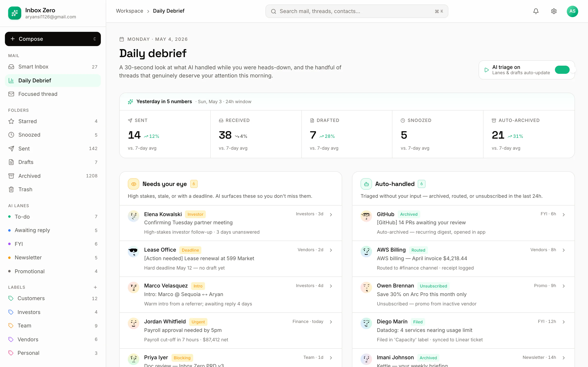
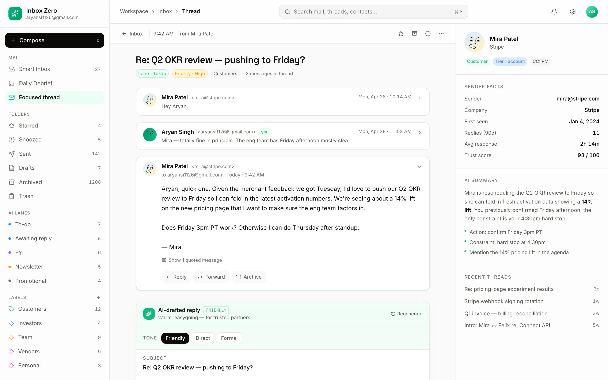

To-do
Emails that need something from you. This is your real work queue for the morning — and usually the only lane you open first.
AI sorts every email into five clean lanes, drafts replies in your voice, and hands you a one-screen debrief. You clear the morning, not the day.
Pause any time — every auto-action keeps a full audit trail.
Typical time to load a full inbox — cleared before the coffee cools.
Emails handled autonomously, each with a reviewable audit trail.
Every message sorted into one calm, unambiguous place.
The model reads intent, not just keywords, and files each message into one of five lanes the moment it arrives. No rules to write, no folders to babysit.
Emails that need something from you. This is your real work queue for the morning — and usually the only lane you open first.
Threads where the ball is in someone else's court. Tracked quietly so nothing you sent falls through the cracks.
Context you should see but never reply to. Skimmed in seconds, cleared with a keystroke, gone from your mind.
Subscriptions batched together, out of the flow of real conversations. Read them on your terms, not on arrival.
Sales and offers held in their own lane. Auto-archived on your rules, always with a trail you can audit later.
Three moves run in the background from the moment mail arrives to the moment you close the laptop. You stay in control at every step.
Each new email is read for intent and dropped into its lane instantly — To-do, Awaiting reply, FYI, Newsletter or Promotional. No filters to maintain, no inbox to stare at.
For anything in To-do, Inbox Zero drafts a reply that matches your tone — with inline citations showing exactly which lines it drew from. Approve, tweak, or send with one keystroke.
A single debrief shows what was sent, received and drafted, the trend against your week, and everything handled autonomously — replacing the end-of-day inbox sweep entirely.
Every drafted reply comes with its receipts. Hover any highlighted phrase to see the exact line from the thread it was based on — so you approve with confidence, not a leap of faith.
“Can we push the rollout to the 18th? Legal still needs two days on the DPA, and I'd rather ship clean than early.”
Works for me — let's move the rollout to the 18th1. Shipping clean over early is the right call, and two extra days for legal on the DPA2 is worth it. I'll update the timeline and let the team know today.
Three screens from the product itself — the smart inbox, the daily debrief, and a drafted reply with its citations.
The main view splits into AI-classified lanes with suggested actions attached to each thread. Your To-do lane leads; everything else waits its turn quietly.

Sent, received and drafted trends over the week, plus the full list of what was handled autonomously — so the end-of-day sweep becomes a thirty-second glance.

Open any thread to see the drafted reply alongside “why this reply” citations — each highlighted phrase tracing back to a specific line. Approve, edit or send, all from the keyboard.

See Inbox Zero on your own mail flow — smart lanes, drafted replies with citations, and a daily debrief. We'll walk you through it live.